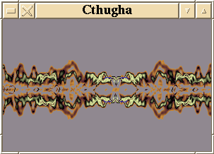
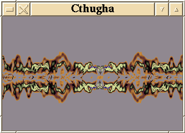

![[ TABLE OF CONTENTS ]](../gx/indexnew.gif)
![[ FRONT PAGE ]](../gx/homenew.gif)


Around 1993 Kevin Burfitt, an Australian computer science student, began developing a computer program which would transform recorded music into moving colored patterns. Programs such as this had been in use for some time, typically as an adjunct to a rock concert, i.e. part of the "light show". This program was originally written for DOS, though before long it began to acquire a trait common to software in the unix world: a multitude of options and parameters.
Kevin must be a fan of the early 20th-century horror writer H.P. Lovecraft. How else to account for the distinctive appellation "Cthugha" which he gave his program? In the Lovecraft stories Cthugha is the name given to a horrific "elder god" which manifested itself to humans in the form of shifting colored lights. (This doesn't sound too horrific, but Lovecraft could make a loaf of bread seem sinister!)
Cthugha has from the early days been available under the aegis of
the Gnu General Public License, making the source freely available. This
opened the door for many other programmers scattered throughout the world who
became involved with the project. Sound familiar? Ports of the
program are now available for the PowerMac, Win95 (in development), and of
course Linux. Harald
Deischinger is responsible for the Linux port. He recently released a new
version (0.9) which is available from the following sites:
The input to the program can be any audio source, such as a microphone, a CDROM drive (though you must have the drive connected to your soundcard), or even a sound file. Cthugha takes the digital audio information and, after passing the data stream through any combination of filters, displays it to the screen in real time. The keyboard is used to change the various parameters either specifically or randomly. The simplest displays resemble the screen of an oscilloscope being fed audio data (Cthugha has been called "an oscilloscope on acid") but as more optional filters are added the display becomes baroquely intricate. If too many filters are active the resulting images can be chaotic, with little discernible relation to the sound being processed.
The Linux version of Cthugha is compiled into two executables: cthugha, which is a console application (using Svgalib), and xcthugha, which runs either in an X-window or as a full-screen X application using the new DGA extensions. This last requires XFree86 3.2 or later. Xcthugha can also be run as a screensaver; in former releases this was a separate executable.
In this release the X11 version runs faster and smoother than in earlier releases, but I still prefer the console version. It's the quickest and most responsive of the three interfaces and (in my experience) the only usable version on a machine less powerful than a mid-range Pentium.
Running Cthugha reminds me of playing a musical instrument. The first attempts aren't consistently pleasant, but with practice a measure of control is gained. Orchestral or loud rock music can benefit from low gain settings, which help to produce a non-chaotic display. The good sort of recording to start with is music with few voices or tracks. A vocalist with minimal accompaniment or solo instrumental music give good results while you gain a feel for the program.
Cthugha comes with several "translation tables"; these are filters which map the display to various moving patterns, such as spirals or the appearance of traveling through a starfield. I don't use them much, as it seems to me they obscure the relationship between the music and the display. The tables also tend to increase CPU usage. Try them and see what you think, as they seem to be popular with other Cthugha users.
The other filter categories are more useful. The "wave" filters control the general shape of the sound waves. These run the gamut from basic oscilloscope sine and square waves to angular lightning-like patterns or floating clusters of fire-flies. The "flame" filters add to the waves trailing clouds of glory (I've always wanted to use that phrase in a non-ironic sense!).
Using a microphone as input is fun, especially if there are kids around. Seeing your voice represented as billowing clouds of iridescent plasma is novel, to say the least. Various musical instruments are interesting to try as well; if one person plays the instrument while the other keys in parameters, a combination which seems to reflect the character of the melody can often be found. If you should happen upon a combination of settings which results in a particularly pleasing screen just press the a key and those settings are entered into your Cthugha initialization file.
Another option is the Fast Fourier Transform, an algorithm which gives an entirely different look to the sound; it's hard to describe, but FFT seems more three-dimensional and subtle. The sampling rate should be reduced to 22000 hz. (from the default of 44000 hz.) since FFT adds one more level of computation to the sound-translation process.
Kevin Burfitt's decision to use the Fractint 256-color palette file as the Cthugha palette file format was fortuitous. Over the years Fractint users have come up with a multitude of palette files among which can be found palettes to please anyone's taste. The Fractint fractal generator includes a handy palette-file editor which can be used to create or modify palettes for Cthugha. I'm not sure if the palette editor is included with Xfractint -- I mostly use the DOS Fractint in a Dosemu console session.
Here are a couple of screen-shots of xcthugha running in a 320x200
window:
 

These are snapshots, of course, and show little of the dynamic quality of Cthugha reacting to the music. The above images, by the way, are of an old recording of Sarah Vaughan singing with piano accompaniment.
Last modified: Sun 27 Apr 1997